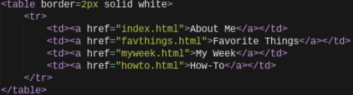
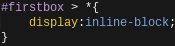
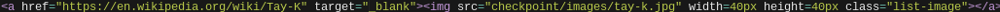
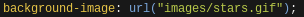

| About Me | How-To for About Me | American Flag in Javascript | How-To for Generative Art | Pokemon Tier List | How-To for Interactive Page |

Using the code above, I made a navigation bar. This navigation bar is a simple table, with clickable links inside the cells for the various pages shown on the page. For example, the "About Me" cell on the navigation bar will take you to the About Me page.
In addition to the navigation bar, I also made the About Me page that was mentioned earlier. One half of the About Me page is a div with my picture and a short biography of me next to each other. The image and the text are together because of this code:
The div has the id #firstbox. Using the universal selector *, this id will have the image and the text in the same line. Without this code, the text would be underneath the image.
In addition the the above div, I also made three separate lists of some of my favorite things. The list items all have a favorite thing of mine next to a picture of it. These lists are all divs inside of a larger div. Connecting the three divs was similar to putting my image and my short biography next to each other. In a large div holding all the elements that I want next to each other, I used the "display:inline-block;" with the universal selector * like before. I also wanted to make the pictures in the list links to the Wikipedia articles of the thing it was describing. To do this I used this code:
(The above picture is actually outdated, the picture is 50 by 50 now)
By wrapping the anchor tag outside of the image, I was able to make the image link to that specific Wikipedia article. The code "target="_blank"" was added so that I could open the link in a new tab. I was also able to resize the image to 50 by 50 using the height and width attributes.
An important choice that I made was to make the background a gif. I did this using the following code:
The selector "background-image" selects the background image, and the url selects the gif with that url. In this case, the url was a .gif file within the /images/ folder. I got the gif file from this website.
Another choice I made was to have the images in the list aligned vertically. I did this by gradually increasing the size of the text until the image would wrap onto the next page. After that, I would use the last font size that still has the image still inline with it. After changing the sizes of all text, I would adjust the margin-top of all three lists to touch the div with my picture and my short biography on it.